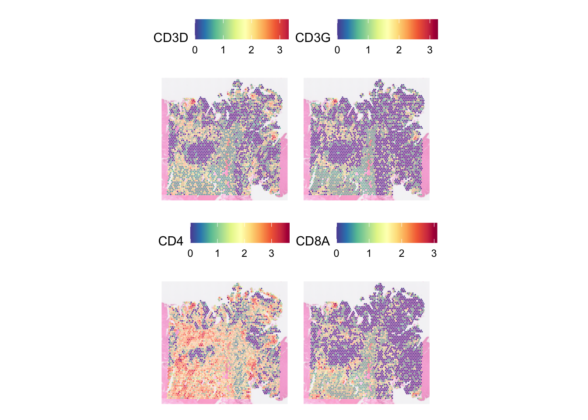

Last updated: 2024-11-21
Checks: 7 0
Knit directory: asi_spatial_workshop_2024/
This reproducible R Markdown analysis was created with workflowr (version 1.7.1). The Checks tab describes the reproducibility checks that were applied when the results were created. The Past versions tab lists the development history.
Great! Since the R Markdown file has been committed to the Git repository, you know the exact version of the code that produced these results.
Great job! The global environment was empty. Objects defined in the global environment can affect the analysis in your R Markdown file in unknown ways. For reproduciblity it’s best to always run the code in an empty environment.
The command set.seed(20240925) was run prior to running
the code in the R Markdown file. Setting a seed ensures that any results
that rely on randomness, e.g. subsampling or permutations, are
reproducible.
Great job! Recording the operating system, R version, and package versions is critical for reproducibility.
Nice! There were no cached chunks for this analysis, so you can be confident that you successfully produced the results during this run.
Great job! Using relative paths to the files within your workflowr project makes it easier to run your code on other machines.
Great! You are using Git for version control. Tracking code development and connecting the code version to the results is critical for reproducibility.
The results in this page were generated with repository version 8d5c060. See the Past versions tab to see a history of the changes made to the R Markdown and HTML files.
Note that you need to be careful to ensure that all relevant files for
the analysis have been committed to Git prior to generating the results
(you can use wflow_publish or
wflow_git_commit). workflowr only checks the R Markdown
file, but you know if there are other scripts or data files that it
depends on. Below is the status of the Git repository when the results
were generated:
Ignored files:
Ignored: .DS_Store
Ignored: .Rhistory
Ignored: .Rproj.user/
Ignored: data/.DS_Store
Ignored: data/single_cell/
Ignored: data/visium/
Ignored: output/visium/
Ignored: visium/
Unstaged changes:
Modified: analysis/_site.yml
Modified: analysis/visium_01.Rmd
Modified: analysis/visium_02.Rmd
Modified: analysis/visium_crc.Rmd
Note that any generated files, e.g. HTML, png, CSS, etc., are not included in this status report because it is ok for generated content to have uncommitted changes.
These are the previous versions of the repository in which changes were
made to the R Markdown (analysis/visium_03.Rmd) and HTML
(docs/visium_03.html) files. If you’ve configured a remote
Git repository (see ?wflow_git_remote), click on the
hyperlinks in the table below to view the files as they were in that
past version.
| File | Version | Author | Date | Message |
|---|---|---|---|---|
| Rmd | 8d5c060 | Givanna Putri | 2024-11-21 | wflow_publish("analysis/visium_03.Rmd") |
| html | 24e561e | Givanna Putri | 2024-11-21 | Build site. |
| Rmd | 58b8a13 | Givanna Putri | 2024-11-21 | wflow_publish("analysis/visium_03.Rmd") |
In this part of the workshop, we will learn how to create some spatial plots using Seurat and how to customise them.
library(Seurat)
library(qs)
library(ggplot2)
library(scales)We will be using the Seurat object that we have QCed and normalised in part 2.
dat <- qread("output/visium_seurat_qced_norm.qs")
datAn object of class Seurat
35982 features across 3959 samples within 2 assays
Active assay: SCT (17991 features, 3000 variable features)
3 layers present: counts, data, scale.data
1 other assay present: Spatial
1 spatial field of view present: slice1SpatialFeaturePlot is a function in Seurat that allows you to plot a feature (e.g., the expression of a gene) of the spots over the image of the tissue.
For example, let’s plot the expression of CD3D gene of our data.
SpatialFeaturePlot(dat, features = "CD3D")
| Version | Author | Date |
|---|---|---|
| 24e561e | Givanna Putri | 2024-11-21 |
Often, the spots may look too small, like in this case. We can
increase it by increasing the pt.size.factor parameter.
# store it so we can use the same number later on
pt_size <- 5
SpatialFeaturePlot(dat, features = "CD3D", pt.size.factor = pt_size)
| Version | Author | Date |
|---|---|---|
| 24e561e | Givanna Putri | 2024-11-21 |
We can also adjust the opacity of the spots and the image underneath
it by tuning the alpha and image.alpha
parameter accordingly. The higher the number, the less opaque the spots
and image will be.
# Dimming the spots
SpatialFeaturePlot(dat, features = "CD3D", pt.size.factor = pt_size, alpha = 0.3)
| Version | Author | Date |
|---|---|---|
| 24e561e | Givanna Putri | 2024-11-21 |
# Dimming the image
SpatialFeaturePlot(dat, features = "CD3D", pt.size.factor = pt_size, image.alpha = 0.5)
| Version | Author | Date |
|---|---|---|
| 24e561e | Givanna Putri | 2024-11-21 |
# Completely removing the image
SpatialFeaturePlot(dat, features = "CD3D", pt.size.factor = pt_size, image.alpha = 0)
| Version | Author | Date |
|---|---|---|
| 24e561e | Givanna Putri | 2024-11-21 |
If a range is passed onto the alpha parameter, it will
alter the minimum and maximum opacity. This is handy if you want to
accentuate the higher expression as we can lower the minimum opacity
(which defaulted to 1) and increase the maximum opacity.
SpatialFeaturePlot(dat, features = "CD3D", pt.size.factor = 5,
image.alpha = 0.5, alpha = c(0.5, 3))
| Version | Author | Date |
|---|---|---|
| 24e561e | Givanna Putri | 2024-11-21 |
In the plot above, each spot is coloured by the expression of CD3D
gene. Notably, because the active assay of the data was set to SCT
before we run SpatialFeaturePlot, the CD3D expression we
plotted above is not the raw UMI count, but rather the count that has
been normalised using SCTransformed, stored in the data
layer.
We can run the function on the raw unnormalised count by changing the
default assay and setting the slot parametr to the count
layer:
DefaultAssay(dat) <- "Spatial"
SpatialFeaturePlot(dat, features = "CD3D", pt.size.factor = pt_size, image.alpha = 0.5,
slot = "count")
| Version | Author | Date |
|---|---|---|
| 24e561e | Givanna Putri | 2024-11-21 |
In one SpatialFeaturePlot call, we can visualise multiple features. E.g., let’s visualise four genes, CD3D, CD3G, CD4, CD8A, :
DefaultAssay(dat) <- "SCT"
SpatialFeaturePlot(dat, pt.size.factor = 5,
image.alpha = 0.5, features = c("CD3D", "CD3G", "CD4", "CD8A"))
| Version | Author | Date |
|---|---|---|
| 24e561e | Givanna Putri | 2024-11-21 |
You can set how many columns do you want to spread the images across
by specifying the parameter ncol.
SpatialFeaturePlot(dat, pt.size.factor = 5,
image.alpha = 0.5,
features = c("CD3D", "CD3G", "CD4", "CD8A"), ncol = 4)
| Version | Author | Date |
|---|---|---|
| 24e561e | Givanna Putri | 2024-11-21 |
By default, the plot will focus on the the area of the tissue where the spots are. Disabling this by setting crop to FALSE will show the entire tissue.
SpatialFeaturePlot(dat, features = "CD3D", crop=FALSE, image.alpha = 0.5,
pt.size.factor = 3)
| Version | Author | Date |
|---|---|---|
| 24e561e | Givanna Putri | 2024-11-21 |
SpatialDimPlot is different from SpatialFeaturePlot in that it allows us to visualise qualitative features.
For example, let’s visualise the spot by the patient ID metadata we added in part 1 before.
SpatialDimPlot(dat, group.by = 'patient_id', pt.size.factor = pt_size,
image.alpha = 0.5)
| Version | Author | Date |
|---|---|---|
| 24e561e | Givanna Putri | 2024-11-21 |
There are some parameters that are shared between SpatialDimPlot and
SpatialFeaturePlot, like pt.size.factor,
image.alpha, alpha
We can override the spot colour by setting the cols
parameter with a named vector mapping the discrete category in the data
against the colour. To visualise this, let’s pretend we have 3 patients
in our data.
# pretend we have three patients in the data
dat[[]]$pretend_patient_id <- c(
rep("Adam", 3000),
rep("Jane", 700),
rep("Clare", 259)
)
SpatialDimPlot(dat, group.by = 'pretend_patient_id',
pt.size.factor = pt_size, image.alpha = 0.5,
cols = c("Adam" = "#0096FF", "Jane" = "orange", "Clare" = "#023020"))
| Version | Author | Date |
|---|---|---|
| 24e561e | Givanna Putri | 2024-11-21 |
We can also highlight only spots that belong to certain group and grey out the rest. E.g. let’s discretise spots based on their CD3D expression
SpatialDimPlot(dat, pt.size.factor = pt_size, image.alpha = 0.3,
cells.highlight = list(
"CD3pos" = WhichCells(dat, expression = CD3D > 2),
"CD3neg" = WhichCells(dat, expression = CD3D <= 2)),
cols.highlight = c(
"CD3pos" = "yellow",
"CD3neg" = "grey70"))
| Version | Author | Date |
|---|---|---|
| 24e561e | Givanna Putri | 2024-11-21 |
We can also split the image such that we have 1 panel each for each group.
SpatialDimPlot(dat, pt.size.factor = pt_size, image.alpha = 0.3,
cells.highlight = list(
"CD3pos" = WhichCells(dat, expression = CD3D > 2),
"CD3neg" = WhichCells(dat, expression = CD3D <= 2)),
cols.highlight = c("yellow", "grey70"),
facet.highlight = TRUE)
| Version | Author | Date |
|---|---|---|
| 24e561e | Givanna Putri | 2024-11-21 |
Both SpatialFeaturePlot and SpatialDimPlot
will return a ggplot object, which we can modify using the
functions and notations built into the ggplot2 package.
As an example, let’s update a feature plot showing CD3D expression such that we:
CD3D to CD3D SCTransformed exp# Default SpatialFeature Plot
plt_dark_bg <- SpatialFeaturePlot(
dat,
features = "CD3D",
pt.size.factor = pt_size,
image.alpha = 0
)
# 1) Overriding the colour scheme to viridis
plt_dark_bg <- plt_dark_bg + scale_fill_viridis_c(option = 'viridis')Scale for fill is already present.
Adding another scale for fill, which will replace the existing scale.# 2) Rename `CD3D` to `CD3D SCTransformed exprssion`
plt_dark_bg <- plt_dark_bg + labs(fill='CD3D SCTransformed exp')
# 3) Have a black background and white axes
plt_dark_bg <- plt_dark_bg +
theme_minimal() +
theme(
legend.text = element_text(colour = "white"),
legend.title = element_text(colour = "white"),
legend.background = element_rect(fill = "black"),
plot.background = element_rect(fill = "black"),
panel.grid = element_blank(),
axis.text = element_text(colour = "white"),
axis.line = element_line(colour = "white")
)
plt_dark_bg
| Version | Author | Date |
|---|---|---|
| 24e561e | Givanna Putri | 2024-11-21 |
Since the plot is a ggplot object, we can export them using either the export button in Rstudio’s panel, or the ggsave function:
ggsave(filename="output/spatial_plot_darkbg.png", plot=plt_dark_bg)When there are multiple features drawn using
SpatialFeaturePlot, the resulting object is no longer a
ggplot object but rather a “Large patchwork” object, an object generated
by the patchwork
package. This package is commonly used for combining plots in R. In
actual fact, the large patchwork object itself is a list where each
element is a ggplot object. Thus, to modify the plot, you will just need
to override each object like above.
sessionInfo()R version 4.4.1 (2024-06-14)
Platform: aarch64-apple-darwin20
Running under: macOS Sonoma 14.6
Matrix products: default
BLAS: /Library/Frameworks/R.framework/Versions/4.4-arm64/Resources/lib/libRblas.0.dylib
LAPACK: /Library/Frameworks/R.framework/Versions/4.4-arm64/Resources/lib/libRlapack.dylib; LAPACK version 3.12.0
locale:
[1] en_US.UTF-8/en_US.UTF-8/en_US.UTF-8/C/en_US.UTF-8/en_US.UTF-8
time zone: Australia/Sydney
tzcode source: internal
attached base packages:
[1] stats graphics grDevices utils datasets methods base
other attached packages:
[1] scales_1.3.0 ggplot2_3.5.1 qs_0.27.2 Seurat_5.1.0
[5] SeuratObject_5.0.2 sp_2.1-4 workflowr_1.7.1
loaded via a namespace (and not attached):
[1] RColorBrewer_1.1-3 rstudioapi_0.16.0 jsonlite_1.8.9
[4] magrittr_2.0.3 spatstat.utils_3.1-0 farver_2.1.2
[7] rmarkdown_2.28 fs_1.6.5 vctrs_0.6.5
[10] ROCR_1.0-11 spatstat.explore_3.3-2 htmltools_0.5.8.1
[13] sass_0.4.9 sctransform_0.4.1 parallelly_1.38.0
[16] KernSmooth_2.23-24 bslib_0.8.0 htmlwidgets_1.6.4
[19] ica_1.0-3 plyr_1.8.9 plotly_4.10.4
[22] zoo_1.8-12 cachem_1.1.0 whisker_0.4.1
[25] igraph_2.0.3 mime_0.12 lifecycle_1.0.4
[28] pkgconfig_2.0.3 Matrix_1.7-0 R6_2.5.1
[31] fastmap_1.2.0 fitdistrplus_1.2-1 future_1.34.0
[34] shiny_1.9.1 digest_0.6.37 colorspace_2.1-1
[37] patchwork_1.3.0 ps_1.8.0 rprojroot_2.0.4
[40] tensor_1.5 RSpectra_0.16-2 irlba_2.3.5.1
[43] labeling_0.4.3 progressr_0.14.0 fansi_1.0.6
[46] spatstat.sparse_3.1-0 httr_1.4.7 polyclip_1.10-7
[49] abind_1.4-8 compiler_4.4.1 withr_3.0.1
[52] fastDummies_1.7.4 highr_0.11 MASS_7.3-61
[55] tools_4.4.1 lmtest_0.9-40 httpuv_1.6.15
[58] future.apply_1.11.2 goftest_1.2-3 glue_1.7.0
[61] callr_3.7.6 nlme_3.1-166 promises_1.3.0
[64] grid_4.4.1 Rtsne_0.17 getPass_0.2-4
[67] cluster_2.1.6 reshape2_1.4.4 generics_0.1.3
[70] gtable_0.3.5 spatstat.data_3.1-2 tidyr_1.3.1
[73] RApiSerialize_0.1.4 data.table_1.16.0 stringfish_0.16.0
[76] utf8_1.2.4 spatstat.geom_3.3-3 RcppAnnoy_0.0.22
[79] ggrepel_0.9.6 RANN_2.6.2 pillar_1.9.0
[82] stringr_1.5.1 spam_2.10-0 RcppHNSW_0.6.0
[85] later_1.3.2 splines_4.4.1 dplyr_1.1.4
[88] lattice_0.22-6 survival_3.7-0 deldir_2.0-4
[91] tidyselect_1.2.1 miniUI_0.1.1.1 pbapply_1.7-2
[94] knitr_1.48 git2r_0.33.0 gridExtra_2.3
[97] scattermore_1.2 xfun_0.47 matrixStats_1.4.1
[100] stringi_1.8.4 lazyeval_0.2.2 yaml_2.3.10
[103] evaluate_1.0.0 codetools_0.2-20 tibble_3.2.1
[106] cli_3.6.3 RcppParallel_5.1.9 uwot_0.2.2
[109] xtable_1.8-4 reticulate_1.39.0 munsell_0.5.1
[112] processx_3.8.4 jquerylib_0.1.4 Rcpp_1.0.13
[115] globals_0.16.3 spatstat.random_3.3-2 png_0.1-8
[118] spatstat.univar_3.0-1 parallel_4.4.1 dotCall64_1.1-1
[121] listenv_0.9.1 viridisLite_0.4.2 ggridges_0.5.6
[124] leiden_0.4.3.1 purrr_1.0.2 rlang_1.1.4
[127] cowplot_1.1.3